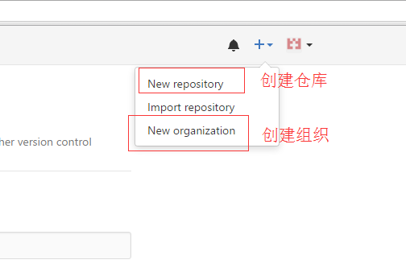
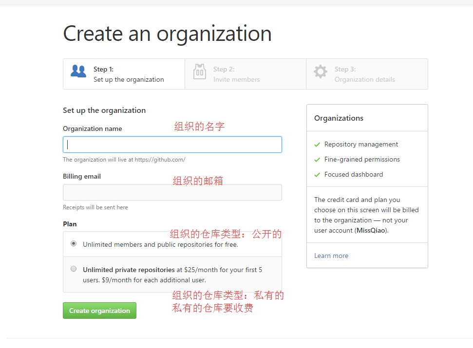
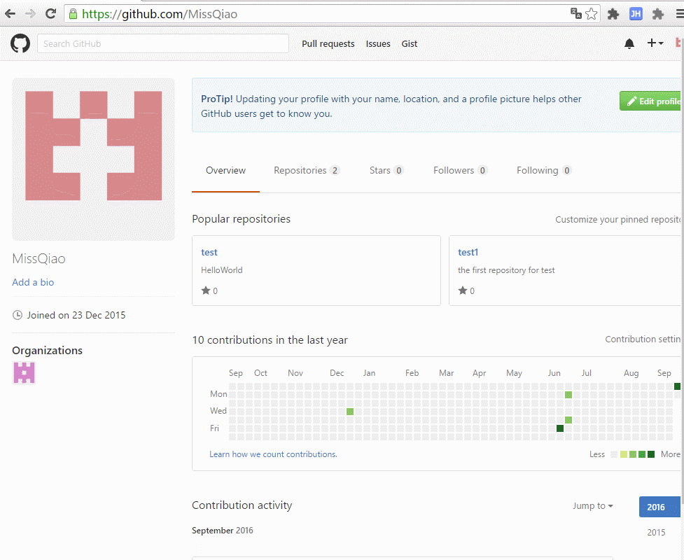
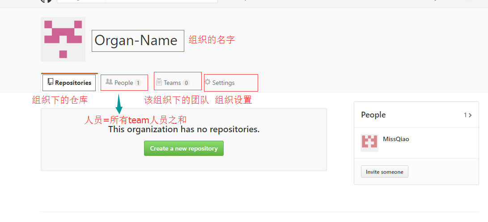
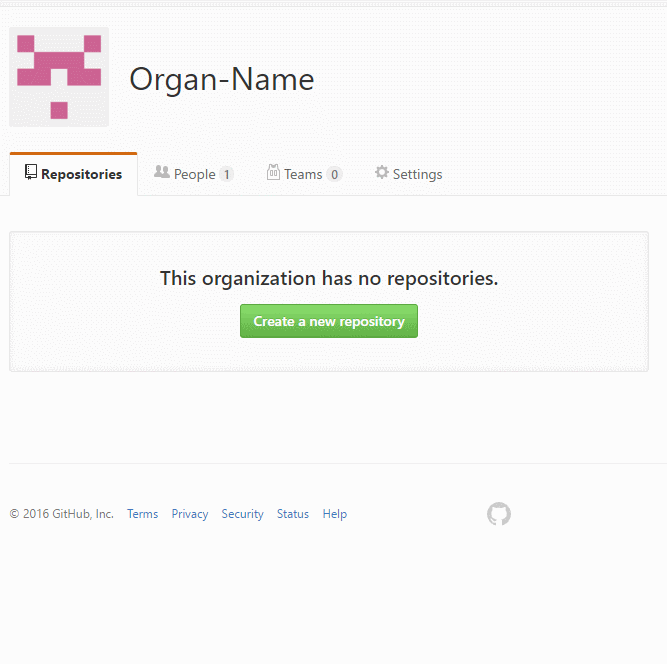
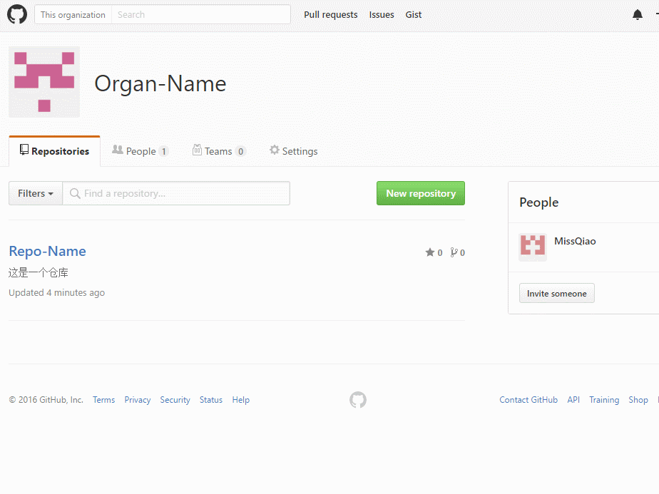
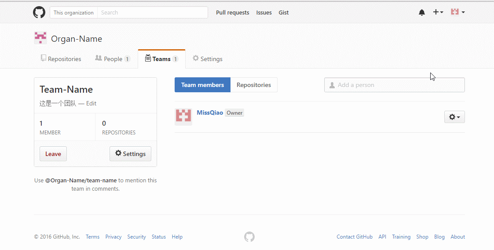
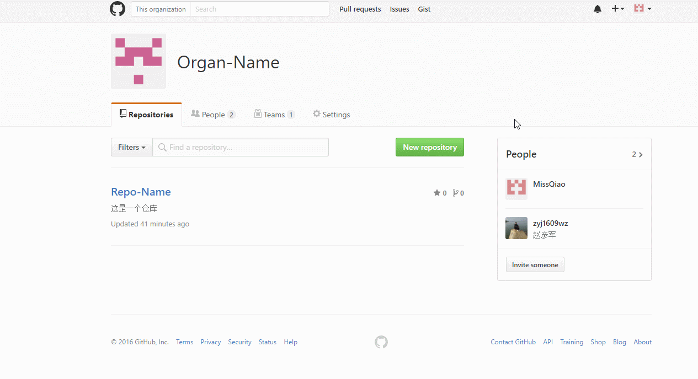

GitHub 实现多人协同提交代码并且权限分组管理
转载请标明出处：
http://www.cnblogs.com/zhaoyanjun/p/5882784.html
出自[赵彦军博客] 2016-09-19
前言：
在上一篇文章中Android github 快速实现多人协作 (http://www.cnblogs.com/zhaoyanjun/p/5829142.html)介绍了如何快速的实现多人协作的功能。
其优点是：操作简单，快速上手。缺点是：没有办法实现权限控制。为啥要权限控制？这是一个蛋疼的问题，因为我们为了项目的安全考虑，需要对一部分人开放只读权限(只能 read、clone) ; 或者对一部分人开放写权限(只能 read、clone、push) ; 或者对一部分人开放管理者权限(只能 read、clone、push、给仓库添加成员 )。事实上github对权限的管理只有4种，前三种权限分别是 Admin(管理者)、Write(只写) 、Read(只读) 。最后一种权限比较特殊，它是该组织的创建者，拥有至高无上的的权利。
正文：
要想弄清楚github权限管理，需要了解几个概念。 organization（组织） 、repository（仓库）、Team（团队）。
在了解这些概念之前，先听我讲一个小故事。话说从前有个生意人，由于他聪明又能干，他开了水果摊、奶茶店、还有一个网吧。转眼10年过去了，他积累了很多钱，也有了很牛逼的权利，总的来说就是有钱有势有人，于是乎有一天他带领100个兄弟成立一个黑帮组织：青帮。组织成立后，他把100个兄弟分成4个team, 每个team 25个人。团队成立后，兄弟们总不能坐着饿死吧，于是乎他有开了一个ktv 、一个超市、一个足浴大保健。那么问题就来了，怎么让4个team接手这3个项目，要有明确的权限控制，如果权限控制不得当，就会出现自家兄弟互相抢地盘的问题。一个项目可以让多个team管理，一个team可以管多个项目，所以team和项目之间是多对多的关系。
- 小故事的中的角色资产分析
生意人所拥有的资产：3个项目：水果摊、奶菜店、网吧。
1个组织：青帮
青帮组织所拥有的资产：3个项目：Ktv、超市、足浴大保健
4个team
注意：水果摊、奶菜店、网吧 这三个项目只属于生意人的资产，不归任何组织所拥有。那延伸一下，生意人是可以再次创建一个新的项目，比如一个4s店；同时他也可以再创建一个新的组织，比如一个洪帮组织。同样在洪帮组织里面可以创建多个team。
现在可以把思路转换到github中，对应关系
生意人 --> 你注册的github账户
水果摊 --> repository（仓库）
青帮 --> organization（组织）
团队 --> Team（团队）
1、github实战--创建组织
在故事中，生意人可以创建项目和组织。对应到github上的用户可以创建仓库和组织。


完整的实例

2、github实战--在组织中创建仓库
当创建完组织后，来看看组织的结构

在Organ-Name 组织下，创建一个仓库

3、github实战--在组织中创建team

团队创建完成后，默认这个团队的成员只有一个人，就是该账号。下面就开始给这个team添加其他成员。

邀请成功以后，需要被邀请人去自己的邮箱点击一下，确认邀请
4、github实战--在组织中给仓库添加team并且设置权限。

可以看到，仓库对team的权限控制有三种
- Admin 管理者权限(只能 read、clone、push、给仓库添加成员 )
- Write 写权限(只能 read、clone、push)
- Read 读权限(只能 read、clone)
另外任意一个Team可以供多个组织使用，到这里权限添加已经全部完成了。
总结
- 通过这篇文章可以在github愉快的使用权限管理了，但是github不能免费的创建私有仓库，这是一个很严重的问题。如果是开源项目，用github完全没有问题。如果是私有项目，可以有以下几个途径达到要求
1、在github花钱购买私有仓库。
2、使用国内比较出名的开源中国git托管服务：https://git.oschina.net/
3、使用GitLab,这需要在自己的服务器上部署。传送门：https://about.gitlab.com/gitlab-com/